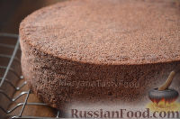
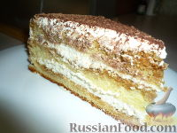
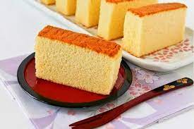

Бисквит – это вид кондитерского теста и получаемого из него изделия, которое может быть основой для бисквитных тортов, пирожных, десертов. Освоив классические рецепты бисквита, можно овладеть множеством рецептов выпечки.

|
Очень простой рецепт без использования разрыхлителя и соды.
Только мука, яйца, сахар и небольшая щепотка соли.
Именно такие ингредиенты используются для классического пышного
|
яйца, мука, сахар, соль
|  |
Этот шоколадный бисквит готовится быстро, просто и без разделения яиц на белки и желтки!
Если все делать по данному рецепту, то в итоге получается пышный, мягкий и нежный шоколадный бисквит.
Предлагаем рецепт шоколадного бисквита для разных форм.
|
яйца, сахар, мука, какао-порошок, разрыхлитель, яйца, сахар, мука, какао-порошок, разрыхлитель
|  |
Практически традиционный "Тирамису",
торт с большим количеством сливочно-творожного крема,
кофейным сиропом и какао.
|
яйца, пудра сахарная, масло сливочное, мука, яйца, сахар, творог, сливки, кофе, сахар, вода, коньяк
|  |
Кастелла – исключительно нежный и воздушный бисквит.
В отличие от классического бисквита кастелла получается мелкопористой и влажной.
Традиционно японский бисквит пекут на паровой бане в прямоугольной форме,
а затем разрезают на кусочки и подают.
Но можно испечь бисквитный пирог в круглой форме обычным образом.
Этот рецепт - медовая кастелла, один из вариантов японского бисквита.
|
яйца, пудра сахарная, масло сливочное, мука, яйца, сахар, творог, сливки, кофе, сахар, вода, коньяк